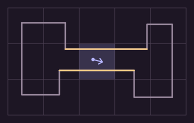
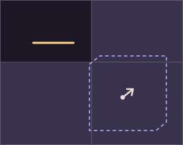
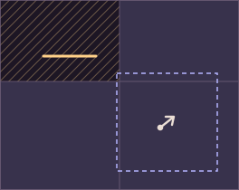
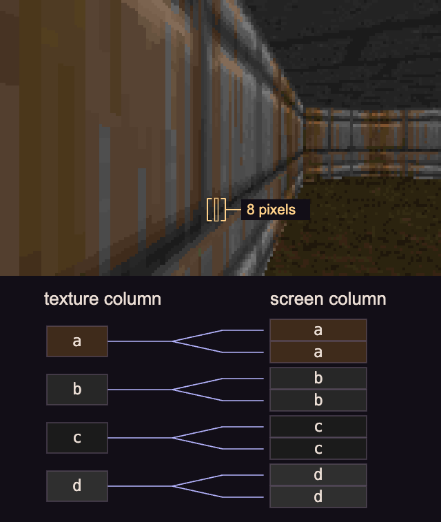
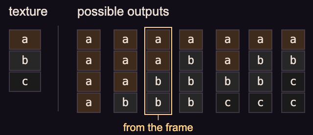
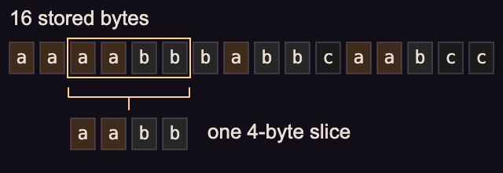
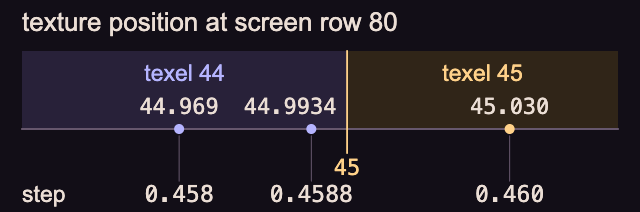
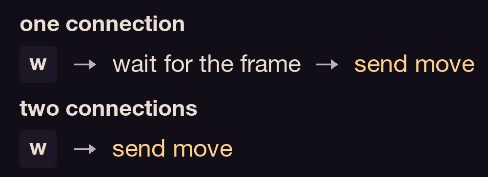
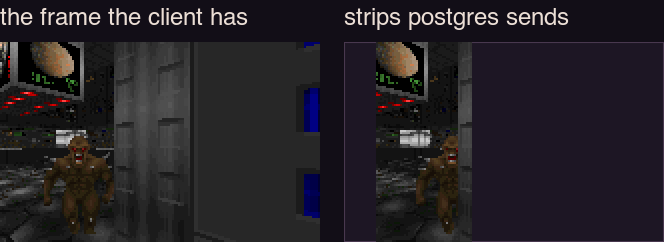

making it playable
for (int i = 0; i < 4; i++)
strip[i] = texture[start + i];4 bytes from a texture into a buffer. here, strip holds the colors for 4 pixels i’m drawing in one column of a wall. it’s already in memory, so c can go straight to strip[i] and change that one byte. the next iteration writes into the same buffer. with a postgres bytea, i’d call set_byte and assign the result back to strip. set_byte copies the whole value before changing the byte. 4 iterations, 4 copies of the buffer.
compiling doom’s c engine to wasm was one option. i’d write an interpreter in postgres to carry out the compiled instructions, including memory reads and writes like these. the original engine would still be deciding what to read, what to write, and how often to do it.
for that little loop, i’d be teaching postgres to read and write each byte separately. the bytes are next to each other in the texture. what i actually want to say is “give me those 4 bytes and leave the rest to me.” substring can return the whole run in one call. once i know which part of the wall is in view, i can ask postgres for the texture bytes i need to draw it.
so i kept doom’s maps and art. i wrote the engine in sql. from scratch.
the people at cedardb had already ported doom to sql. i ran sqldoom with the limits of planetscale’s $5 instance, 1/16 of a vcpu and 512 mib of ram. at 320×200, i got 0.033 fps. that’s 6 new frames in 3 minutes.
my engine was drawing at 160×100, so i tried that size with sqldoom too. i had it sample every other row and column while drawing. that got me 0.05 fps, or 9 new frames in 3 minutes.
one of my early builds at 160×100 got 0.25 fps. that’s 3 new frames in 12 seconds.
okay, say i double it. i get a new frame every 2 seconds. double it again and i’m at 1 fps. try aiming at a monster that gets a whole second to move before you see where it went.
i had a lot of code to go back through. at least i knew who wrote it.
the cost of taking a step
i profiled 350 game updates without drawing a single frame. postgres spent 452 ms in the game update function. 379 ms of that was in try_move, where the game decides whether the player or a monster can take its next step.
for a short move, i only need the walls close enough to get in the way. doom uses a grid to find them. i put a grid over the map too and gave each cell a list of the walls that touch it.

each cell in my grid held wall ids. postgres joined those ids back to the map tables to get the wall’s endpoints and find the sectors on either side.
the next step could take me past the same wall. postgres would do those joins again. i already had the endpoints when i loaded the map. why was i looking them up during play?
i was already going through every wall to build the grid, so i changed what went into each cell.
-- before
array_agg(
line.id order by line.id
)
-- after
array_agg(
row(
line.id,
lseg(line.a, line.b),
front.sector,
back.sector,
line.flags
)::doom.boundary
order by line.id
)| at map load | during a move | |
|---|---|---|
| before | store wall ids | read ids join tables |
| after | store wall data | read wall data |
lseg makes a line segment from the wall’s two endpoints. postgres can now read that segment straight out of the cell. if the wall is farther from the path than the player’s radius, i can skip it.
sectors each have their own floor and ceiling heights. if a nearby wall has a sector on both sides and its flags allow crossing, postgres still reads those heights from the current game state. a door can open while i’m walking toward it.
postgres still had to work out which cells to read. for a mostly horizontal step, the old query went column by column. it worked out which part of the path could reach each column, then used that part of the path and the player’s radius to generate the row numbers. for a mostly vertical step, it swapped rows and columns.
i already had the start and end of the move, so i took the rectangle around them and extended it by the player’s radius on all four sides. that gave me the first and last column and the first and last row. the cell lookup became two between conditions.
along the path

bounding box

the wall in that extra cell is too far from the step and gets dropped by the distance check. i pay for one more segment test here and save the per-column calculations. a short step gives me a small box, so there’s little room for extra cells.
i ran the same 350 inputs again in a separate local test, with the same query plan settings on both versions. game updates went from 540 ms to 67 ms. with a frame drawn after each update, the whole replay went from 1.55 s to 1.11 s. the recorded game state and the rendered pixels matched at every step.
drawing the room once
the pillar stays in the same place on screen as the imp walks past it. with the camera still, i can keep the picture of the room and draw the imp wherever it goes next.
i started by saving where to draw the room. for a wall, that meant remembering which bit of each screen column to paint. postgres could use that list again on the next frame. it still had to sample the textures and paint the room all over again.
so i saved the painted room, shades and all. the next time the imp moved, postgres could start with the room already drawn.


the pillar hides part of the imp in the second frame. paste the whole sprite over the saved room and there’s its arm again, right on top of the pillar.
i save one more value for each room pixel. it’s the depth, or how far in front of the camera the surface at that pixel is. when the imp covers part of the same screen column, postgres can tell where the pillar is closer.
ignoring room depth

checking saved depth

stroke.depth is the imp’s depth. zbuffer[idx] starts with the room’s depth at this pixel. if the imp has an opaque pixel there and it’s closer, i draw it and use the imp’s depth for the rest of the frame.
if stroke.depth < zbuffer[idx] then
column_data := set_byte(column_data, idx, get_byte(sample, i));
column_light := set_byte(column_light, idx, band);
zbuffer[idx] := stroke.depth;
end if;building the cache takes a render of the room, so i wait for 4 tics without movement or turn input before making one. a door can open while i’m standing still, though. before reusing the room, postgres checks the camera position and angle, the map revision, and the current state of doors, floors and lights. if any of those have changed, it draws the room again.
i rendered both imp positions from scratch and got the same pixels and shades as the cached renders. in a separate test at one fixed view in e1m3, i timed 50 frame requests with an empty cache and another 50 with the room cached. the median went from 5.97 ms to 2.11 ms.
eight pixels at a time
once postgres knows where a wall goes on the screen, it still has to fill in all those pixels. i profiled 50 renders of the same view to see how much time that took. picking those colors out of textures and putting them into column buffers took 79 of the 167 ms spent drawing.
doom draws walls in vertical columns. a strip of wall on the screen gets its colors from one column of the wall’s texture. for each pixel i go down on screen, i take a step down the texture. i round that position down to pick a texel, which is a pixel in the texture. the wall is close in this shot, so each of the four texels shown supplies two screen pixels.

the sampler used set_byte to put each color into a bytea strip. every call returned a copy of the strip with one byte changed. that’s the problem with the little c loop from the start of this chapter. now it’s happening while i’m drawing a wall.
i put eight color indices into a bigint. the first goes in the highest byte, and int8send returns the bytes in that order. in the picture, a is color index 142, so it goes into the first two bytes.
select int8send(
(142::bigint << 56) | (142::bigint << 48) |
(107::bigint << 40) | (107::bigint << 32) |
(109::bigint << 24) | (109::bigint << 16) |
(106::bigint << 8) | 106::bigint
);one pass through the loop now puts eight bytes into the strip. postgres still has to work out where all eight bytes come from. the first four pixels in that strip pick a, a, b, b. could i have those four bytes ready to go?
some groups stay in a for all four pixels. in others, the last pixel finally reaches b. for a close wall, the same few texels give us a short list of patterns.

there are three steps from the first pixel to the fourth. if each step is smaller than 2/3 of a texel, the first and last samples are less than two texels apart. rounding down can land them in at most three adjacent texture rows. each step is also too short to skip a row on the way.
the patterns overlap. store aaaab and i can read both aaaa and aaab. one more b and there’s aabb, starting at the third byte. all seven fit into a 16-byte sequence this way. i prepare one of these for each starting texel.

to pick the right slice, i start at eye height. with the camera looking straight ahead, a point at eye height lands halfway down the screen however close the wall is. in a 100-row frame, that line sits between rows 49 and 50. on this wall it meets the texture at 31.
screen row 80 is 30.5 rows below that line. multiply that distance by step to get how far down the texture to sample.
texture position = 31 + 30.5 * step
44.969 and 44.9934 both round down to 44. this row starts picking a different texel when the position reaches 45. that happens at a step of (45 - 31) / 30.5, about 0.459016. that’s its cutoff.
this is where the whole number helps. if eye height hits texture row 32, every sample moves down one whole texel. the steps at which they cross a boundary stay the same. if eye height hits 31.25, even a step of 0.458 lands at 45.219. the cutoff has moved.
each screen row contributes its own cutoffs. put them all in order and, between any two neighbors, every row keeps picking the same texel relative to eye height. that gives me a table of slice offsets for each interval. during a frame, postgres finds the interval for the wall’s step and uses those offsets to take four bytes at a time. near a cutoff, a tiny floating-point difference can pick the neighboring texel, so the regular sampler takes over.
i timed three passes through the same e1m3 route with the room cache off. drawing 1,025 frames took a median of 2.74 s with single-byte updates, 2.55 s with eight-byte updates, and 2.37 s with the prepared strips added. the savings vary by level. in e1m3, the prepared strips took about 9 MiB of extra texture storage. across two levels, i checked 1,709 frames and got the same pixels and shades from all three versions.
how a keypress gets through
say i’ve asked postgres for a frame. before it comes back, i press w. with one connection and one request at a time, my move would sit on my machine until the frame arrived. then it would make a round trip of its own.
the client opens two connections to postgres. the frame loop asks for a picture on one connection and waits for it to come back. meanwhile, the input loop is still running. if i press w, it can send my move on the other connection while the frame is still on its way.

i tried both setups with 50 ms of simulated round-trip time and queued a move 10 ms after asking for a frame. i timed the wait from when the move was ready to send until postgres replied. across 8 runs of each setup, the median was 104 ms with one connection and 52 ms with two.
the input reply tells me postgres has processed my move. the frame i’d already asked for still came back showing where i was standing before it.
the client aims to sample the controls 35 times a second, once for each game update. doom calls those updates tics. at 50 ms rtt, if i send one command and wait for its reply before sending the next, i can get through at most 20 commands a second. the client would be adding commands to its queue faster than it could send them. once those two slots filled up, it would have to wait for room before sampling the controls again. so when 2 commands are waiting, i send both in one request and wait for one reply.
if a request carries the commands for tics 41 and 42, postgres commits them one at a time. the changes to the game from tic 41 and the number 41 go into the same transaction. as soon as that transaction commits, a new frame request can see the game at tic 41 while tic 42 is still running.
what if the connection drops before the reply comes back? did either command go through? the client reconnects and sends both again with the same tic numbers. if postgres has 41 saved as the last tic, it knows the changes from tic 41 committed too. it can skip 41 and pick up at 42.
| tic 41 | tic 42 | |
|---|---|---|
| first request | committed | uncommitted |
| same request on retry | skipped | committed |
i tested this with a batch of turns. i cut the connection after postgres had committed some of them, then resent the whole batch. the player ended up facing exactly the same way as in the run i let finish.
sending only what changed
the imp’s halfway behind the pillar now. my client still has the frame where it’s standing out in the open. i need to send the bit of floor it was covering and the part of the imp that’s still visible. the rest of the room is already there.
postgres already lays out the frame in columns. i group 8 columns into a strip. the first time the client asks for a frame, postgres sends the whole picture and a hash of the color and lighting bytes in each strip.
on the next request, the client sends those hashes back. postgres draws the new frame and compares the strips against what the client has. for each strip that changed, it sends the new bytes and where they go. the client replaces those columns in the picture it already has.

the imp’s move changed 6 of the 20 strips. counting the request and reply together, that update went from 33.1 kB to 12.3 kB. the client ended up with the same frame, byte for byte.
if i turn the camera and every strip changes, the whole picture goes over the connection again, along with the hashes.
there are a bunch of other little changes in the engine. i picked the ones i had the most fun figuring out. you can read the source for all of them on github.
i’ve been saving my favorite part for the next chapter. if postgres gives me two frames, can i sneak a third one in between?